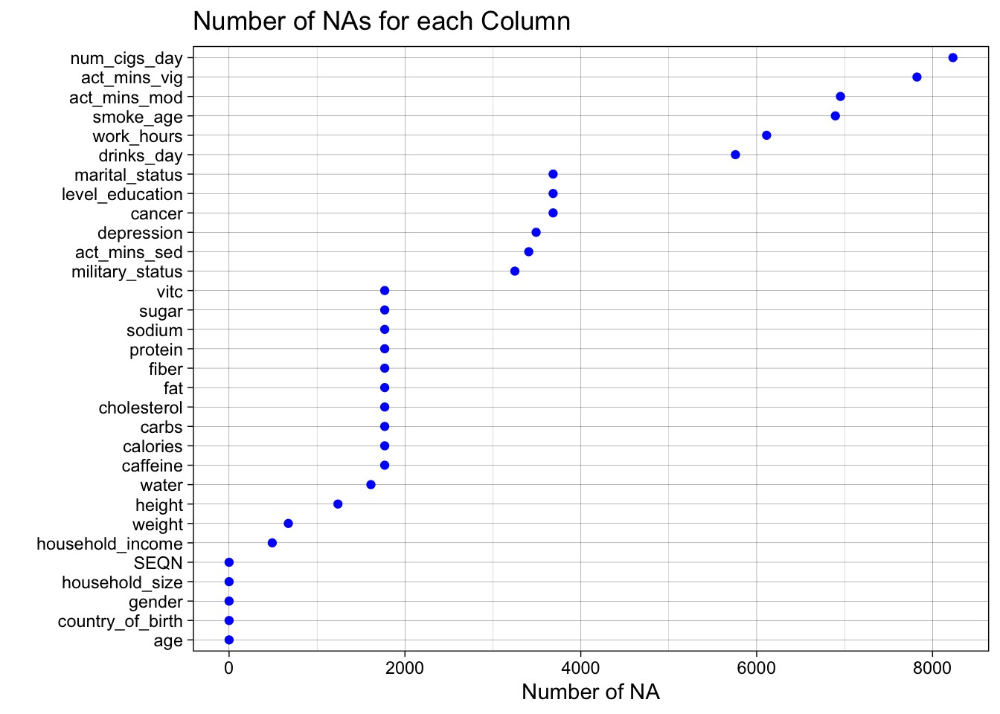
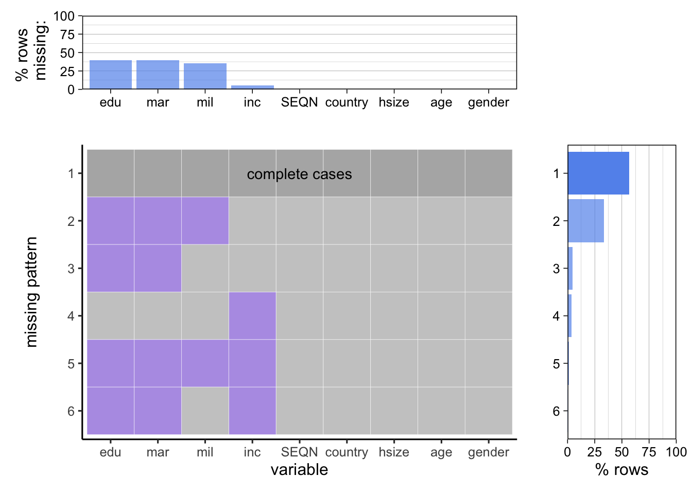
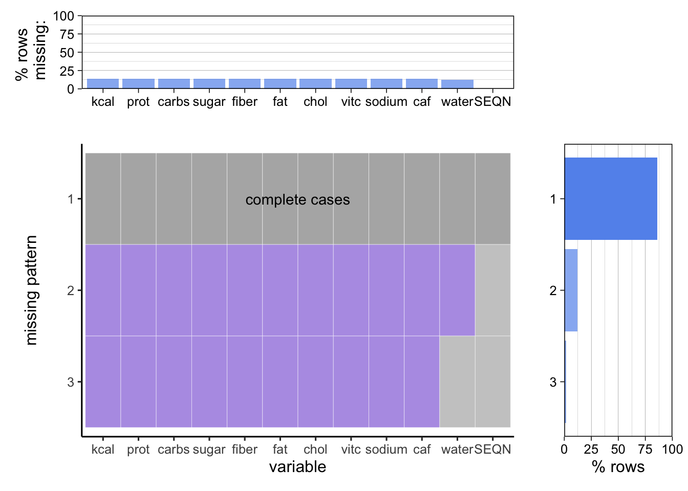

Chapter 3 Data
3.1 Sources
The NHANES dataset is collected by employees in mobile surveying centers with the equipment needed to take measurements and collect samples as well as doing questionnaires. The approach is extremely well documented and can be found here. There was significantly more data than we possibly could have used in our project so we had to take extremely small subsets of it. Out of the many surveys we chose the demographics, body measures, nutrients, alcohol, disabilities, conditions, work, physical activity, and smoking datasets. Not every person filled out every survey. The demographics dataset is the baseline with 9254 respondents, and the rest of the surveys have less with the alcohol dataset having the least respondents with 5533. One challenge we faced was in the design of the survey: not answering a question is not the same as saying no. For example: not answering the smoking survey does not necessarily mean a participant doesn’t smoke. We had to factor this in to our analysis throughout the project.
3.1.1 Dataset columns
We chose these columns based off our interest in questioning whether they were related to others. We took a much larger subset of the columns, then brainstormed possible associations in order to trim down the list.
The columns we use in the demographics dataset are: ID, country of birth, level of education, household size, age (topcoded at 80), gender, household income, military status, and marital status.
The columns used in the body measures dataset are: ID, weight (kg), and height (cm).
The columns used in the nutrients dataset are: ID, calories (kcal), protein (g), carbs (g), sugar (g), fiber (g), total fat (g), cholesterol (mg), vitamin C (mg), sodium (mg), caffeine (mg), and water (g).
The columns from the alcohol dataset are: ID and number of drinks per day.
The disabilities columns are: ID and how often do you feel depressed.
The columns we use from the conditions set are: ID and have you ever had cancer.
The columns used in the work dataset are: ID and hours worked a week.
From the physical activity dataset we use: ID, minutes recreational vigorous activity per day, miutes moderate per day, and minutes sedentary per day.
Finally, the columns we use from the smoking dataset are: ID, number of cigarettes per day last month and age started smoking regularly.
3.2 Cleaning / transformation
We download our data with a script based on the starter one NHANES provides here. We download each dataset separately then deal with merging them. Every entry in each dataset has a corresponding SEQN respondent ID which we left join over to create our total dataset. This ensures that each person gets a row in our database even if they didn’t answer every question. We do our preprocessing on a graph by graph basis because we use different portions of the dataset for each graph. The code is found dispersed throughout our graphs. Many of our columns are categorical with set responses which we find in codes in each dataset’s corresponding documentation on the NHANES website here. We also process these individually for the sake of ease. There are also some codes like 77,777 and 99,999 which refer to “refuse to answer” or “didn’t answer” which we also have to preprocess.
3.3 Missing value analysis
3.3.1 NA’s per Column
In order to do missing value analysis we have to take a less coventional approach because we have so many columns merged together from different datasets. First, we show the number of NAs in each column.

We see that things like number of cigarettes a day have higher counts of NA because they are more niche parts of the survey and are less likely to be filled out, whereas things like nutrition, body measurements, or demographics are either very low in NAs or not missing any. However, we cannot conclude from an NA that someone doesn’t smoke, we just have to remove it because they may still have been a smoker and not filled out the question.
Next we take a look at a few of our datasets to see trends within them.
3.3.2 Pattern Analysis for Demographics
Next we take a look at the demographics dataset specifically.

Here we see that level of education, and marital status are tied for most missing and we can see 4/5 of our missing patterns are missing both these fields with none having one or the other. Perhaps this is due to the survey methods putting these two questions close together. We also see military status having a decent amount missing. Income also has a very tiny amount of values missing. The most common missing pattern is education, marital, and military which leads us to believe this was in fact, due to how the survey was given grouping these questions.
3.3.3 Pattern Analysis for Nutrition
Next we look at the nutrition dataset.

We see that the vast majority of the data is complete and there are only 2 missing patterns, one where none of the fields are filled, and one where just water is filled. This could be due to the fact that people answering did not want to count up all their nutrients, and water is a simple thing to list as it’s easy to estimate whereas the rest aren’t necessarily.